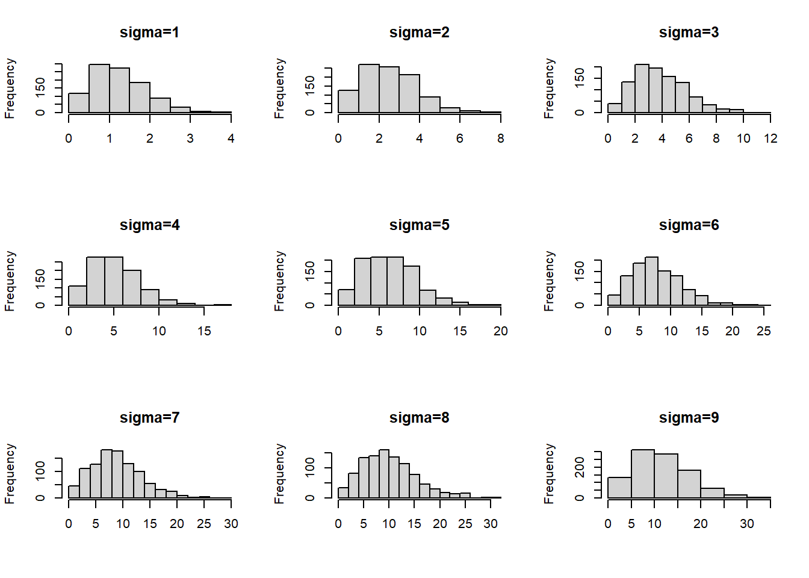

2 第2次作业解答
2.1 Question
3.4, 3.11, and 3.20
2.2 Answer
2.2.1 3.4
The Rayleigh density [156, Ch. 18] is \[ f(x)=\frac{x}{\sigma^{2}} e^{-x^{2} /\left(2 \sigma^{2}\right)}, \quad x \geq 0, \sigma>0 . \] Develop an algorithm to generate random samples from a Rayleigh \((\sigma)\) distribution. Generate Rayleigh \((\sigma)\) samples for several choices of \(\sigma>0\) and check that the mode of the generated samples is close to the theoretical mode \(\sigma\) (check the histogram).
解:
Rayleigh随机变量\(X\)的分布函数: \[ F(x)=1-\exp \left(-\frac{x^{2}}{2 \sigma^{2}}\right), x \geq 0 \] 所以\(F^{-1}(y)=\sigma \sqrt{-2 \ln (1-y)}\)
Rayleigh =function(sigma, n){
for(i in 1:n) {
U=runif(n)
V=1-U
X = sigma * sqrt(-2 * log(V))
}
return(X)
}
sigma = 2
n = 1000
hist(Rayleigh(sigma, n),main = "Rayleigh",xlab="")
2.2.1.1 多试几组sigma
sigma=c(1:9)
n=1000
par(mfrow=c(3,3))
for(i in 1:9){
title=paste0("sigma=",sigma[i])
hist(Rayleigh(sigma[i], n),main = title,xlab="")
}
2.2.2 3.11
Generate a random sample of size 1000 from a normal location mixture. The components of the mixture have \(N(0,1)\) and \(N(3,1)\) distributions with mixing probabilities \(p_{1}\) and \(p_{2}=1-p_{1}\). Graph the histogram of the sample with density superimposed, for \(p_{1}=0.75 .\) Repeat with different values for \(p_{1}\) and observe whether the empirical distribution of the mixture appears to be bimodal. Make a conjecture about the values of \(p_{1}\) that produce bimodal mixtures.
2.2.2.1 p1取0.75
n=1000
X1=rnorm(n,0,1)
X2=rnorm(n,3,1)
u <- runif(n)
p1=as.integer(u < 0.75)
p2=1-p1
Z=p1*X1+p2*X2
hist(Z,main = "p1=0.75")
2.2.2.2 p1从0变化到1
p=seq(0,1,0.1)
par(mfrow=c(3,4))
for(i in 1:11){
p1=as.integer(u < p[i])
p2=1-p1
Z=p1*X1+p2*X2
title=paste0("p1=",p[i])
hist(Z,main=title)
}
把\(p1\)的值从0变化到1，发现: 当\(p1\)在\(0.5\)附近的时候容易出现双峰.
2.2.3 3.20
A compound Poisson process is a stochastic process \(\{X(t), t \geq 0\}\) that can be represented as the random sum \(X(t)=\sum_{i=1}^{N(t)} Y_{i}, t \geq 0\), where \(\{N(t), t \geq 0\}\) is a Poisson process and \(Y_{1}, Y_{2}, \ldots\) are id and independent of \(\{N(t), t \geq 0\}\). Write a program to simulate a compound Poisson \((\lambda)\)-Gamma process \((Y\) has a Gamma distribution). Estimate the mean and the variance of \(X(10)\) for several choices of the parameters and compare with the theoretical values. Hint: Show that \(E[X(t)]=\lambda t E\left[Y_{1}\right]\) and \(\operatorname{Var}(X(t))=\lambda t E\left[Y_{1}^{2}\right]\).
Poisson_Gamma=function(n, t, lambda, r, beta) {
N =rpois(n, lambda * t)
X=sapply(N, function(N, r, beta) sum(rgamma(N, r,beta)), r,beta)
return(X)
}
test=function(n, t, lambda, r, beta) {
x=Poisson_Gamma(n, t, lambda, r,beta)
## 样本均值
sm=mean(x)
## 理论均值
vm=var(x)
## 样本方差
tm=lambda * t * r/beta
## 理论方差
tv=lambda * t * (1 + r) * r/beta^2
## 输出结果样式
cat("r=",r,"beta=",beta,"\n")
cat("样本均值:", sm, " ")
cat("理论均值:", vm, "\n")
cat("样本方差:", tm, " ")
cat("理论方差:", tv, "\n\n")
}
## 参数值
n=1000
lambda_seq=c(1:3)
r_seq=c(1:3)
beta_seq=c(1:3)
t=10
for (lambda in lambda_seq) {
for (r in r_seq) {
for (beta in beta_seq) {
test(n, t, lambda,r,beta)
}
}
}## r= 1 beta= 1
## 样本均值: 10.33856 理论均值: 21.19996
## 样本方差: 10 理论方差: 20
##
## r= 1 beta= 2
## 样本均值: 4.975843 理论均值: 4.838821
## 样本方差: 5 理论方差: 5
##
## r= 1 beta= 3
## 样本均值: 3.353112 理论均值: 2.516242
## 样本方差: 3.333333 理论方差: 2.222222
##
## r= 2 beta= 1
## 样本均值: 19.71719 理论均值: 57.66402
## 样本方差: 20 理论方差: 60
##
## r= 2 beta= 2
## 样本均值: 10.10393 理论均值: 16.49437
## 样本方差: 10 理论方差: 15
##
## r= 2 beta= 3
## 样本均值: 6.646154 理论均值: 6.628004
## 样本方差: 6.666667 理论方差: 6.666667
##
## r= 3 beta= 1
## 样本均值: 29.88445 理论均值: 118.7453
## 样本方差: 30 理论方差: 120
##
## r= 3 beta= 2
## 样本均值: 14.78825 理论均值: 31.79365
## 样本方差: 15 理论方差: 30
##
## r= 3 beta= 3
## 样本均值: 10.04617 理论均值: 14.5193
## 样本方差: 10 理论方差: 13.33333
##
## r= 1 beta= 1
## 样本均值: 20.29056 理论均值: 39.01199
## 样本方差: 20 理论方差: 40
##
## r= 1 beta= 2
## 样本均值: 10.14759 理论均值: 9.726158
## 样本方差: 10 理论方差: 10
##
## r= 1 beta= 3
## 样本均值: 6.609317 理论均值: 4.428728
## 样本方差: 6.666667 理论方差: 4.444444
##
## r= 2 beta= 1
## 样本均值: 39.89234 理论均值: 118.3005
## 样本方差: 40 理论方差: 120
##
## r= 2 beta= 2
## 样本均值: 20.02827 理论均值: 29.06556
## 样本方差: 20 理论方差: 30
##
## r= 2 beta= 3
## 样本均值: 13.30788 理论均值: 13.73979
## 样本方差: 13.33333 理论方差: 13.33333
##
## r= 3 beta= 1
## 样本均值: 60.58828 理论均值: 244.0888
## 样本方差: 60 理论方差: 240
##
## r= 3 beta= 2
## 样本均值: 29.92388 理论均值: 61.73559
## 样本方差: 30 理论方差: 60
##
## r= 3 beta= 3
## 样本均值: 19.90115 理论均值: 24.91304
## 样本方差: 20 理论方差: 26.66667
##
## r= 1 beta= 1
## 样本均值: 30.19722 理论均值: 64.34136
## 样本方差: 30 理论方差: 60
##
## r= 1 beta= 2
## 样本均值: 15.04214 理论均值: 15.64235
## 样本方差: 15 理论方差: 15
##
## r= 1 beta= 3
## 样本均值: 10.00053 理论均值: 6.361
## 样本方差: 10 理论方差: 6.666667
##
## r= 2 beta= 1
## 样本均值: 60.29732 理论均值: 166.3114
## 样本方差: 60 理论方差: 180
##
## r= 2 beta= 2
## 样本均值: 29.6664 理论均值: 41.9984
## 样本方差: 30 理论方差: 45
##
## r= 2 beta= 3
## 样本均值: 19.84228 理论均值: 20.41756
## 样本方差: 20 理论方差: 20
##
## r= 3 beta= 1
## 样本均值: 90.29934 理论均值: 366.9125
## 样本方差: 90 理论方差: 360
##
## r= 3 beta= 2
## 样本均值: 44.9703 理论均值: 88.93843
## 样本方差: 45 理论方差: 90
##
## r= 3 beta= 3
## 样本均值: 29.79438 理论均值: 39.52432
## 样本方差: 30 理论方差: 40